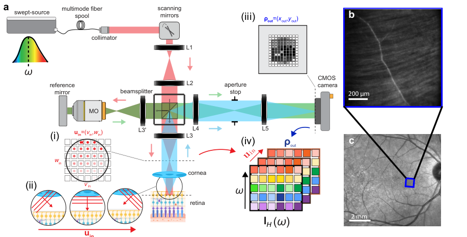
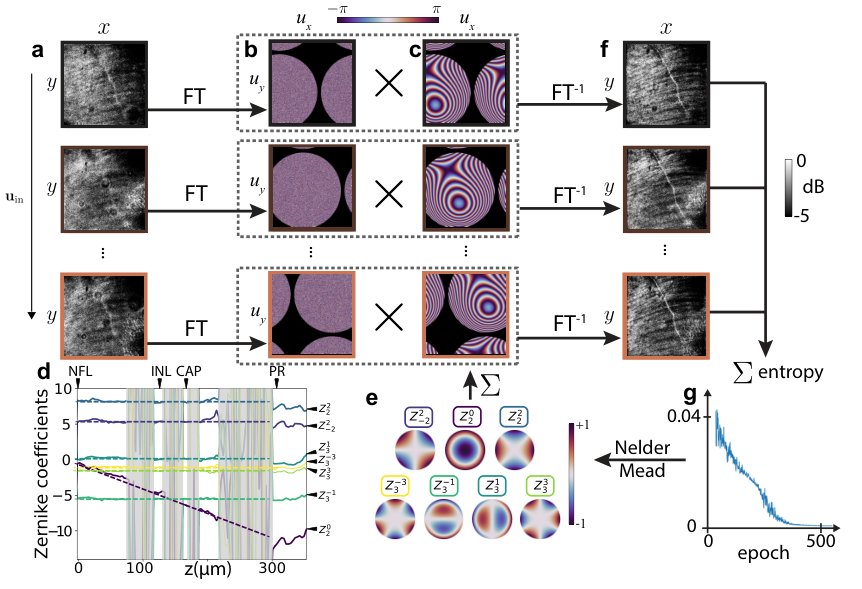
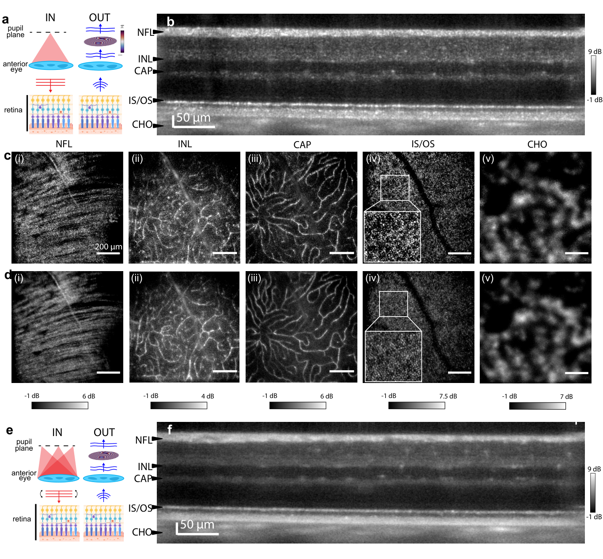
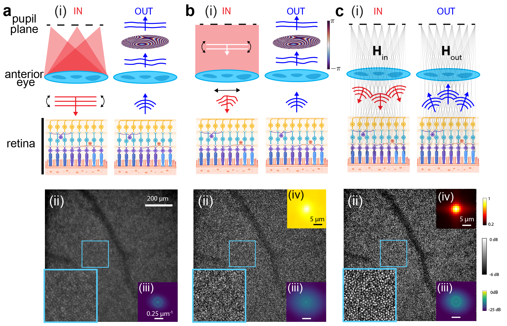
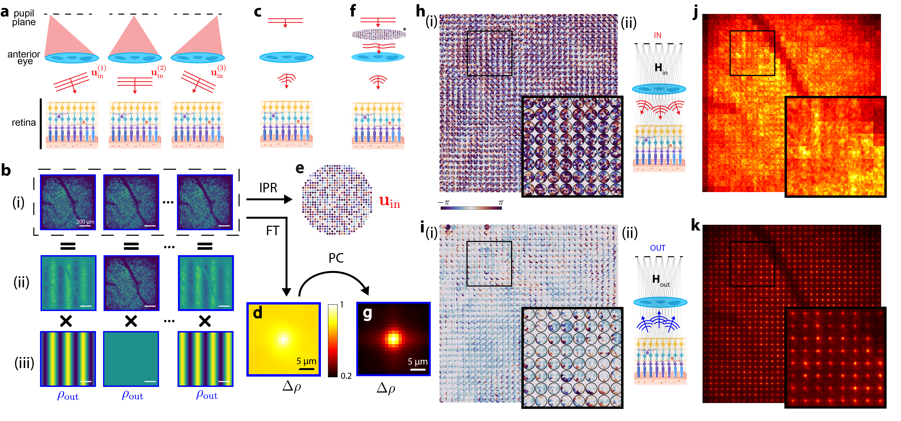
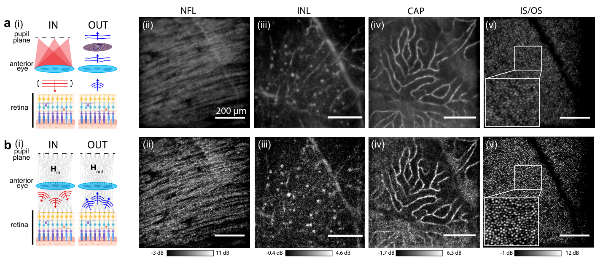
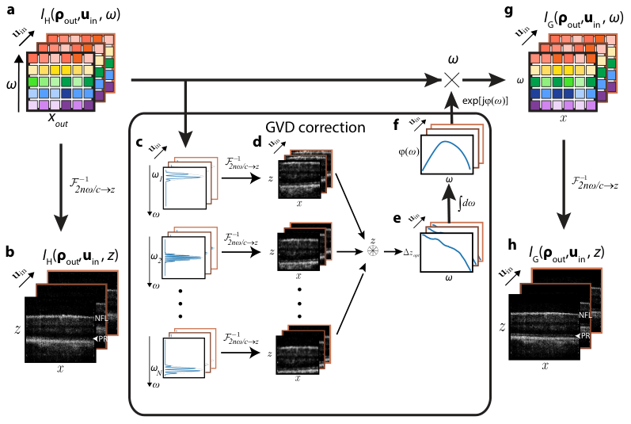
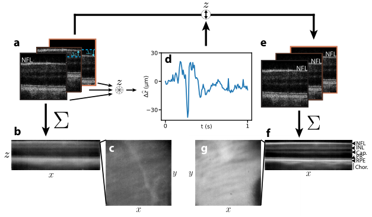
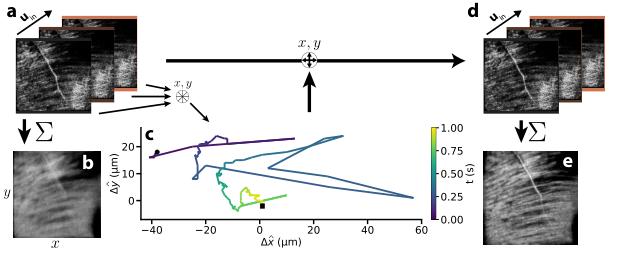

通过计算运动校正与像差校正实现高分辨率视网膜矩阵成像
摘要
对人类视网膜的高分辨率光学成像对于诊断眼科与神经退行性疾病至关重要。虽然自适应光学与相干门控相结合能够在细胞尺度分辨视网膜结构，但其需要复杂、昂贵且笨重的硬件来物理校正眼部像差与运动。矩阵成像通过利用波的线性特性来消除像差与多重散射，提供了一种强大的数字替代方案；然而，连续、不自主的眼球运动会在采集过程中破坏相位相干性，从而阻碍了其体内应用。在此，我们克服了这一根本障碍，并展示了首个使用无需物理校正器的超简化光学装置的人体视网膜在体反射矩阵成像。我们引入了一个全计算框架，可直接从原始干涉数据中跟踪并补偿多轴眼球运动，从而恢复多光谱畸变矩阵的相位相干性。这实现了局部高阶像差校正，以获得视网膜组织的衍射极限体积成像。通过将硬件负担转移到物理引导的数值计算，这一范式为可普及、无创且高分辨率的数字眼科开辟了道路。
Introduction
对人类视网膜的高分辨率光学成像对于眼科7、35和神经退行性28、38疾病的早期诊断与监测至关重要。在过去几十年中，自适应光学（AO）与光学相干断层扫描（OCT）相结合，已成为在细胞尺度分辨视网膜结构的金标准16，51，53，52，47，25，39，34，49，9。然而，AO的广泛临床部署仍受限于其显著的硬件复杂性、高成本和有限视场，并且需要实时物理波前传感与校正。
十年前，计算光学相干断层扫描，即 holoscopy，实现了向软件驱动3D视网膜成像迈出的一个重要里程碑19。通过记录眼睛在单次照明下反射的复波场，holoscopy证明了轴向运动17和眼部像差19可以通过数字相位操作进行事后校正。然而，依赖来自单一方向的全场照明使holoscopy失去了共焦门控，从而因残余多重散射而限制了分辨率和对比度。此外，holoscopy中的像差补偿要么依赖于图像指标优化策略19，这些策略不能保证收敛到具有物理依据的解，要么依赖于子孔径相关技术18，而该技术仅限于低阶像差，要么依赖于相位梯度自聚焦31，而该方法依赖于等晕假设。
近年来，反射矩阵成像已成为一种颠覆性范式，用以克服这些限制 23，4，50，36，5，54。通过用一组覆盖整个数值孔径且跨越多个波长的入射平面波探测介质，矩阵成像可获得必要的自由度，以合成数字共焦显微镜并执行空间分布、物理引导的像差校正。然而，将这种矩阵范式转化为活体视网膜成像迄今仍难以实现。传统矩阵成像严格假设测量期间介质静态，而活体人眼会发生持续、不自主的微动（震颤、漂移和微扫视），严重破坏连续照明之间的相位相干性。
在本工作中，我们通过展示活体人视网膜的反射矩阵成像，克服了这一根本瓶颈。我们不依赖硬件稳定，而是引入一个完全计算的框架，其受 holoscopy 启发 19，但在此扩展到多照明序列。它直接从原始实验数据中跟踪并补偿多轴眼球运动。一旦恢复照明间相位相干性，矩阵成像算法 36，5 就可充分部署，以校正整个体积内的高阶、非等晕像差，并将每个视网膜层用作导引星的内在分布。
作为概念验证，我们在 7.5 mm 瞳孔直径下对活体人视网膜成像。我们获得了神经纤维层、含神经节细胞的内神经层、微小血管结构以及光感受器细胞的高对比度图像，并达到衍射极限分辨率，同时使用了大幅简化的光学装置，不含任何 AO 组件或物理运动跟踪器。通过将像差和运动校正的负担从硬件转移到物理引导的数值计算，该方法为临床眼科中可普及、广泛的高分辨率成像铺平了道路。
Results
记录活体视网膜的多光谱全息矩阵

三维矩阵成像基于多光谱全息矩阵的测量。受 Balondrade et al. 5 的启发，实验装置与流程如图 1 所示（见方法）。该光学装置源自全息成像术 20，仅由一个类 Linnik 干涉仪构成（图 1a）。在参考臂中，反射镜置于显微物镜（MO，NA=0.25）的焦平面处。在样品臂中，入射光聚焦于眼的前焦平面，并以准直光束照明视网膜。该干涉仪由扫频激光器通过以下方式照明：（i）一段长多模光纤，以产生部分空间相干性并滤除多重散射背景中最弥散的部分 3，42；（ii）两个扫描振镜和一个透镜，可在 MO 和眼瞳孔平面的前方对入射聚焦光束进行光栅扫描 [图 1a(i)]。因此，视网膜和参考镜在光源带宽内的每个频率上都被一组平面波照明 [图 1a(ii)]。随后，反射波分别经 MO 和眼透镜收集到参考臂和样品臂中。这两束光最终在与 MO 焦平面和视网膜共轭的相机上发生干涉。对于瞳孔平面中频率为 、坐标为 的每个输入波前，相机记录一幅干涉图 ，相机的像素由其焦平面中的共轭位置 标识 [图 1a(iii)]。 是空间域（焦平面）中的横向矢量位置，而 映射空间频率域（瞳孔平面）。 每幅干涉图提供多光谱全息矩阵 的一列 [见方法及图 1a(iv)]。注意，与我们此前使用类似装置对不透明离体角膜成像的工作 5 不同，由于采集期间视网膜运动，我们暂不将该全息矩阵称为反射（或畸变）矩阵。在运动补偿之后才会如此。
在当前情况下，全息矩阵 用 个平面波测量，对应于对瞳孔的完整扫描。干涉图由相机的 个像素记录，对应于 973 m 的输出 FOV（即 的视场），空间采样为 m（）。最后，在光源的频带宽度内使用 个独立波长探测视网膜（ nm）。因此，关于样品的全部信息都包含在 个系数中，这些系数是在 1.12 s 内采集的。下文将展示如何对这一海量光学数据进行后处理，以在多轴运动、像差 和残余多重散射 存在的情况下，构建衍射极限分辨率下的视网膜三维高对比度图像。
全息 OCT 与轴向运动补偿
为此，最直接的途径是对每个平面波照明40所记录的后向散射波场在频率上执行傅里叶变换：这就是全视场扫频源 OCT 的原理，其所得图像的轴向维度由光子飞行时间决定。然而，由于波长扫描期间的眼轴运动，每幅所得图像都会变得模糊（补充图 S1）。轴向运动效应会导致样品臂中的表观光程随波数变化。为规避该问题，Hillmann et al. 17 提出对每个入射波的子带宽图像进行互相关，以确定由轴向运动引起的相位波动（方法）。在计算每幅图像之前对该相位误差进行补偿：
| (1) |
其中，为光源带宽，为眼折射率，为真空光速，为相干平面的轴向位置，其定义为在给定飞行时间下对单次后向散射波场有贡献的点集合。每个所得矩阵提供与每个入射平面波相关的视网膜三维图像（补充图 S1）。
然而，各次照明之间仍存在轴向失配。通过对每幅图像沿方向进行互相关，可确定照明序列期间视网膜的轴向位移（方法，补充图 S2）。随后可按如下方式对全息图像进行重新对齐：
| (2) |
结果是得到一组三维图像，其揭示了视网膜的主要层：神经纤维层、内核层、光感受器、视网膜色素上皮和脉络膜组织（补充图 S2）。然而，这些图像存在以下问题：（i）由眼前节离焦和折射率不均匀性引起的强像差；（ii）来自深层的多次散射，其产生与视网膜反射率无直接联系的随机散斑背景。为规避这些问题，一种简单策略是直接对重对齐图像按照明求和，以便在后处理中合成共焦门，并至少部分减轻像差和多次散射。然而，视网膜在照明序列期间还会表现出横向运动，需要预先补偿。该操作需要先对每幅图像的低阶像差进行补偿。
通过熵最小化进行像差的等晕补偿。

离焦与每个深度 处眼睛焦平面和相干平面之间的轴向失配有关。低阶像差由光瞳平面附近的角膜和眼晶状体引起。因此，在初步近似下，相应的波畸变可视为横向不变的。在此等晕假设下，每个干涉波场 可表示如下（补充部分 S3）：
| (3) |
是输入透过率，其支撑域对应光瞳尺寸，其相位表示由以下因素累积的波畸变：(i) 样品臂中光瞳平面与深度 处相干平面之间的入射波场；(ii) 参考臂中的参考波场。 是输出点扩散函数（PSF），连接视网膜（）（位于深度 ）与相机（）平面。 表示深度 处的视网膜反射率。重新对齐波场的平面波分解，
可将视网膜反射率与输出像差解耦（式 3）：
| (4) |
其中光瞳函数 和散射函数 分别是 PSF 和反射率 的傅里叶变换。图 2b 通过展示视网膜反射率的傅里叶频谱如何在输出端被光瞳滤波以及如何被入射波场的倾斜扫描，说明了后一表达式。由于在 处对全息波场的采样有限，这种倾斜会在每个频谱上引起混叠现象。该效应原本可通过在 处对波场过采样来减轻，但这将以 FOV 减小为代价。在下文中，我们将展示如何在大多数后处理流程中保持全息波场的这种降采样。
这种平面波分解也为输出像差的等晕补偿奠定了基础。为此，关键是要估计像差透过率 ，这里我们将其表示为每个深度处二阶和三阶泽尼克多项式 29 的线性组合（图 2d）：
| (5) |
受 Hillmann et al. 19 的开创性工作启发，该估计器通过 Nelder Mead 优化过程 37（图 2c-f）来求解，该过程即最小化校正图像的基于熵的损失（图 2f），
| (6) |
at each depth :
| (7) |
其中 表示每幅归一化 en-face 图像强度的香农熵（方法，式 22）。熵通常用作清晰度指标：聚焦锐利的图像将能量集中在更少像素中，因此具有较低熵，而模糊图像产生更均匀的强度分布，因而熵更高。因此，当估计器 的相位接近等晕像差透射率 时，图像熵被最小化。
该过程在视网膜的每个深度 处重复进行。图 2d 显示了 Zernike 系数在不同视网膜层中的演变。可恢复出离焦的线性演变，直至光感受器层。其他 Zernike 系数在整个视网膜中大致保持恒定，但在阴影区域除外，这些区域中背向散射信号太弱，无法正确估计像差透射率 。因此，对 Zernike 系数进行线性插值直至光感受器层（图 2d 中的虚线），以确保估计器 随深度变化的连续性。
通过比较在神经纤维层（NFL）深度处显示的原始图像（图 2a）和校正后图像（图 2f），可以评估该优化过程的结果。通过混叠像差 透射率的相位共轭（其 相位显示于图 2c），对比度和分辨率得到明显改善。特别地，初始图像中特别模糊的血管（图 2a）现在显得锐利，并且相对于背景具有更高对比度。这种图像质量的提升也由优化过程中图像熵的逐渐降低（图 2g）来量化。
然而，在每次照明获得的校正图像之间仍存在横向位移（补充图 S3）。在组合每幅全息图像之前，补偿这种运动至关重要。与轴向位移的处理相同，可以通过在横向平面对每幅图像进行互相关来确定照明序列期间视网膜的横向运动 （方法）。然后可以如下重新对齐校正后的图像：
| (8) |

全息图像的非相干复合。
既然视网膜全局运动已得到补偿，就可以对全息图像进行非相干复合，以抑制散斑噪声 42，使得：
| (9) |
所得图像 的一个纵向截面显示在图 3f 中。为了与标准全息术 19 比较，同一视网膜截面也在图 3b 中给出，其采用在等效积分时间（Methods）内采集的单照明序列（图 3a）。多照明序列（图 3e）提供每层视网膜更平滑的图像（图 3d），其优于单照明序列（图 3c），如神经纤维层的 en-face 图像图 3c-d(i)]、内神经层 [INL，图 3c-d(ii)] 和毛细血管 [CAP，图 3c-d(iii)] 所突出显示的。这种平滑处理对于突出弱背散射成分（如神经节细胞 [图 3c-d(ii)]）或动态结构（如毛细血管 [图 3c-d(iii)]）可能是有意义的，这一特征对于青光眼或神经血管功能障碍 10，8 等疾病的早期诊断可能至关重要。在更大深度处，通常在光感受器的内节/外节交界（IS/OS）处，非相干复合的优势更显著，因为多重散射散斑的平坦化凸显了来自光感受器的单次散射信号 [图 3c-d(iv)]。然而，图像对比度和分辨率在很大程度上仍可完善。图像分辨率（此处用其自相关的 FWHM 评估）未达到衍射极限：在 IS/OS 交界处为 3.6 m 。图像对比度（此处定义为 ）也远非最优：在 IS/OS 交界处为 。多重散射的表现于脉络膜组织中更为显著，因为无论采用何种照明序列，图像都完全模糊 [图 3c-d(v)]。在这些高度血管化的组织中，血流使全息波场去相关得如此迅速，以至于多照明序列对非相干复合无用。
全息图像的相干合成。

减少多重散射串扰的常用方法是对背散射光子进行共焦门控。在当前情况下，该操作可以在后处理中通过每个预堆叠图像的相干求和来执行 ：
| (10) |
所得图像显示于图 4b(ii) 中 IS/OS 交界处。与其非相干对应图像 [图 4a(ii)] 不同，直接相干合成并未显现光感受器的存在。图 4a-b(iii) 中每幅图像的傅里叶频谱证实了这一点。尽管相干合成图像具有更大的空间频率支撑，但本应在空间傅里叶域中表现为环的光感受器准周期排列并未被观察到。这种相消性相干合成可能有不同来源：(i) 由离焦和眼前节不均匀性引起的低阶输入像差；(ii) 由上游视网膜层所表现出的折射率横向变化引起的高阶像差；(iii) 残余的亚分辨轴向运动，该运动无法通过强度图像之间的互相关检测到。

所有这些现象都表现为透射率 在式 3 中的相位调制。若在一阶近似下假设输出像差已由 Nelder-Mead 优化过程完全补偿（，其中 为狄拉克分布），则式 3 变为：
| (11) |
在此假设下，每个预叠加波场 因此都是视网膜反射率 [图 5b(i)] 被随机相位透射率 调制后的图像。该表达式解释了为何它们的相干合成（式 10）会因每个入射波所经历的残余运动与像差而显著退化。
为了量化这些像差的水平，可对预叠加波场关于 进行傅里叶变换，以对聚焦过程成像（图 5c）：
| (12) |
将式 11 代入上一表达式后，所得波场 实际上可表明其给出了由介质反射率 调制的输入 PSF ：
| (13) |
为减轻视网膜反射率的模糊效应，可在整个视场上进行空间平均：
| (14) |
其中符号 表示对下标变量取平均。所得的反射点扩散函数（RPSF）如图 5d 所示。它呈现如下特征形状：在漫射背景之上有一个与单次散射光子相关的弱共聚焦斑。后一分量的水平解释了图 4b 所示原始共聚焦图像质量较差的原因。对聚焦波场进行局部平均，使我们能够映射 RPSF 在整个视场上的变化（方法，式 29）。局部 RPSF（图 5j）特别模糊，并在整个视场上表现出强烈变化，这一特征可能源于每次照明之间的多轴运动所导致的随机相移。
像差的矩阵补偿。
为了补偿这些像差，首先可以注意到，预叠加波场的集合 [图 5b(i)] 构成一个畸变矩阵 。该算符在先前工作 4 中引入，其数学定义为样本反射矩阵与均匀介质中本应获得的参考矩阵的相位共轭之间的逐元素乘积。实际上，这正是我们的干涉装置所测量的内容（图 1），即视网膜反射的波场 [图 5b(ii)] 与参考镜产生的参考波场 [图 5b(iii)] 之间的干涉。在文献 4 中已表明，对 进行奇异值分解可导致对像差透射率的估计。这正是式 11 的含义；若该式成立，则意味着矩阵 的秩为 1，且输入特征向量等于 。
然而，在实践中，导致式 11 的假设过强（输出 PSF 为点状），应改为对 应用迭代相位反转过程，以正确估计 36（图 5e）。此外，图 5j 中显示的局部 RPSF 在视场范围内表现出强烈变化。这种非等晕特性意味着输入像差透过率具有横向依赖性，即 。因此需要在受限空间窗口（ m2）内进行像差的局部补偿。为此，对每个窗口将迭代相位反转过程应用于一组局部畸变矩阵 （图 5e，方法，式 31）。
结果显示在图 5h 中的 IS/OS 交界处。在每个深度获得估计量 （像差矩阵 ）。它包含针对映射视场的每个区块所获得的一组输入像差相位律 。与之前通过输出端优化过程确定的等晕像差律（图 2）相比，在输入端恢复了高空间频率分量。这些高阶像差源于照明序列期间亚分辨的视网膜运动，也源于上游不同视网膜层引起的折射率不均匀性。
然后，可以使用每个光瞳函数 的相位共轭来补偿这些不利现象（图 5f）：
| (15) |
与其原始对应结果（图 5d）相比，相应的 RPSF（式 14）在 IS/OS 交界处得到显著改善（图 5g）。 共焦背景比提高了 9 dB，其 FWHM 现在达到衍射极限。
然而，该结果仍有改进空间，因为输出端仅进行了像差的全场补偿。为了处理波场在返回路径上经历的非等晕像差，可以通过交换输入和输出来重复相同的像差校正过程，以估计输出透过率矩阵（方法）。注意，对于该操作，每个全息波场 应在输入和输出端以 2 倍过采样，以匹配共焦分辨率（），并防止全息波场在输出光瞳平面中发生混叠（如之前在图中 2b 所观察到的那样）。在每个深度获得残余像差矩阵的估计量，。它包含视场内每个空间窗口的一组输出残余像差相位律。图 5i 展示了在 IS/OS 交界深度处的一个子集。与由等晕优化过程确定的输出像差律（图 2c）相比，恢复了高空间频率分量，这些分量源于上游不同视网膜层引起的折射率不均匀性。这些像差通常不由标准 AO 处理，因为标准 AO 通常依赖于等晕性。
输入和输出像差的矩阵补偿[图 5h-i(ii)，方法]使得局部RPSF（式 29）相较于其原始对应版本（图 5j）得到显著改善（图 5k）。这种在全视场内优化的聚焦质量产生了图 4c(ii)所示感光细胞的高分辨率图像 （式 30）。与全息图像的原始相干合成 [图 4b(ii)]相比，矩阵成像所提供的图像质量增益凸显在最终图像 的空间频谱中，该频谱现在呈现出由感光细胞准周期排列产生的环[图 4c(iii)]。与非相干合成[图 4a(ii)]相比，图像质量增益还体现在其在空间频域中具有更大的支撑[图 4c(iii)]。图像分辨率现在达到衍射极限（ 1.9m），其对比度 相对于非相干合成提高了2.5倍。
Time averaging.

然而，图 4c(ii)中每个感光细胞的形状 看起来并非完美的圆形。这些残余畸变可能源于我们的后处理流程未能补偿的亚分辨横向运动。为减轻这种不良影响，可进行时间平均（方法）。图 6b显示了对一系列20个多光谱全息矩阵进行平均后得到的相干矩阵图像。将它们与图 6a中显示的非相干对应图像进行比较。图 6b(v)显示了IS/OS段的结果。每个感光细胞现在呈现出几乎圆形的形状，并且所得图像等效于最先进的AO，但实验装置要简单得多，并且成像速度相当25，39（本情况下体素率为3.6 MHz）。
由矩阵成像实现的自适应共焦滤波器为光感受器[图 6b(v)]提供了比非相干复合[图 6a(v)]好得多的对比度和分辨率。这一显著特征同样适用于图 6b所示的其他视网膜层。NFL的图像[图 6b(ii)]具有散斑样特征，我们现在可将其归因于其反射率的空间变化，而不是多重散射光子。在INL内侧边缘，得益于矩阵成像，明亮胞体以优化的对比度成像[图 6b(iii)]。正如最近一项AO-OCT研究所提示的，这些胞体最可能归因于移位的视网膜神经节细胞，其似乎对青光眼性损伤高度易感 30。最后，时间平均对于揭示小毛细血管网络也至关重要[图 6b(iv)]。在此，尽管存在血流运动去相关，矩阵成像仍比非相干复合[图 6a(iv)]提供更好的分辨率和对比度。
Discussion
在本工作中，我们展示了反射矩阵成像在人视网膜中的首次在体应用。尽管基于矩阵的方法在静态 23、4、50、36、5、54或局部动态 13散射介质中已取得显著成功，但将该形式体系转化到活体眼仍面临根本性挑战，这是由于持续的微扫视和眼漂移。我们的结果证明，矩阵成像并不局限于静态物体：通过跟踪并补偿多轴运动，矩阵方法能够成功适应动态环境。未来的工作自然将旨在主动利用组织内在运动 13，例如通过集成动态OCT 45，以通过局部时间涨落改进像差估计
与最先进的高分辨率AO-OCT系统 25、39、34、49、9相比，我们的矩阵方法以大幅简化的硬件占用 以及未优化的3.6 MHz体素速率，实现了同等水平的结构细节和空间分辨率。传统高分辨率视网膜成像严重依赖复杂的波前传感器和可变形反射镜，这限制了广泛的临床采用，并且通常仅提供全局波前校正。相比之下，我们的框架允许在整个视场内实现真正局部的高阶像差校正。
除了简化光学装置之外，这一矩阵框架还为深层组织眼科成像开辟了若干途径。在计算方面，它为诸如多共轭24、12以及频率相关的27、11自适应聚焦等先进策略铺平了道路。这些工具将能够实现复杂的时空聚焦规律，通过将多个散射路径与弹道分量重新对准来提高OCT穿透深度。特别是，对脉络膜层穿透能力的改善，可能会彻底改变年龄相关性黄斑变性44和神经退行性疾病2的诊断。
最后，这一范式转变将标准OCT转变为一种定量成像模态。通过利用散斑相关性，可以执行相位对比成像46、1、32，映射光学折射率22、21，并独立测量不同视网膜层中的散射参数15、14、6。更广泛地说，在计算上减轻多重散射的同时动态补偿运动的双重能力，为其他具有挑战性的组织的在体探索开辟了新前沿，例如皮肤26、胃肠道48或血管内成像43，在这些应用中标准OCT始终受到严重受限的穿透深度和运动模糊的困扰。
Methods
Experimental components
实验装置（图1）由以下部件组成：扫频源激光器（Superlum BS-840-1-OEM，带增强器；800–875 nm）、准直器（Thorlabs，F810APC-850）、300 m长的多模光纤（Thorlabs，FG050LGA；低OH；NA = 0.22；50 m芯径）、一对振镜扫描器（Thorlabs，GVS002）、物镜（Olympus Plan Achromat 10；NA = 0.25）以及超高速相机（Photron SA-Z；60 kHz）。
Ethics and safety
该研究获得了吕贝克大学伦理委员会的批准（伦理批准号“Ethik-Kommission Lübeck 16-080”）。研究在一名健康志愿者身上进行；已获得受试者的书面知情同意。对视网膜最大允许曝光量（MPE）的符合性以及所有相关安全规则均由负责的安全官确认。所有实验均按照相关指南和法规进行。
用3.8 mW的光功率在直径4 mm的圆盘上照射眼睛，这对应于30 mW.cm-2的功率密度。这符合ISO 15004-2:2024标准（“眼科仪器——基本要求和试验方法——第2部分：光危害防护”），该标准在我们的配置下（持续照明时间在25 s至5.103 s之间）对第1组（最安全）分别允许前节和视网膜（未加权）上为1.0 W.cm-2和0.7 W.cm-2。
Measurement sampling
全息图矩阵（即 OCT 体数据）是以 个波长采集的，这些波长覆盖扫频光源激光器的 nm 光谱范围。激光器以 9050 nm/s 的扫频速度工作，因此体数据间采集时间为 10 ms。 反射矩阵由以不同照明角度采集的一系列 OCT 体数据重建得到。在相邻体数据之间，利用振镜扫描器改变照明角度，并在尺寸为 mm2 的输入光瞳上扫描。
对于显示于 图 3a-c 中的全息 OCT 结果，也进行了相同的采集，但将振镜固定为垂直入射（）。
用于显示于 图 6 中实验结果的 20 次反射矩阵采集序列由 个入射角组成，相机帧为 像素，输入波场在眼瞳平面中以 m 的空间间距采样。
视网膜以 10.4 的放大倍数成像到相机传感器上。给定相机像素间距（ m），使用孔径光阑将探测 NA 限制为 0.22，以便在 Shannon-Nyquist 极限下对干涉图进行采样。因此，输出波场以空间分辨率 m（接近 ）进行采样，从而得到视网膜共焦图像的以下理论可达分辨率： m。
数据采集与图形处理单元处理
112 平面波 采集序列的所有干涉图由相机在 1.12 s 内记录，并传输到计算机进行后处理。20 次反射矩阵采集耗时 10 s。 反射矩阵的数值后处理由图形处理单元（RTX 6000 Ada Generation）执行。对于本文考虑的数据集，所有聚焦与像差校正算法针对整个体数据均在 15 分钟内完成。
光源波长扫频期间轴向运动的校正
在采集全息图矩阵期间，视网膜发生宏观运动。该位移记为 。该位移 对采集时间 的依赖关系可以改写为 和 的函数，因为每个 组合对应一个采集时间 。
| (16) |
每个窗口的宽度 为 4.4 nm。该操作在实空间中等价于与一个轴向窗口 进行卷积，其扩展范围为 m。然后，通过将每个滤波后的图像 与频率 处对应于 nm 的参考图像进行轴向互相关，得到波长扫频期间的表观轴向运动：
| (17) |
然后，所需相位函数 可通过对 在频率带宽 17 上积分来计算，计算至相差一个线性项：
| (18) |
该相位函数 随后用于补偿每个平面波照明下跨各波长的轴向运动（式 1）。积分常数 定义一个相位因子，对独立获取的每幅图像强度 没有影响。然而，如图 4b 所示，它会严重妨碍这些图像的原始相干合成。
各次照明之间轴向运动的校正
除了这一不期望的相位项之外，每次照明获得的图像彼此之间还可能存在轴向偏移。为估计该位移，可对每幅强度图像与参考图像（）进行轴向互相关：
| (19) |
轴向位移的估计量 用于将各图像彼此重新对齐（式 2）。
各次照明之间横向运动的校正
为在通过熵最小化完成等晕像差校正后估计不同体数据之间的横向运动，采用类似策略，计算每幅强度图像与参考图像（）之间的横向互相关：
| (20) |
Loss function
Local input RPSF
为探测局部 RPSF，将视场划分为若干区域，这些区域由其中心中点 和横向范围 定义。随后可在每个区域内对去扫描强度 进行局部平均：
| (23) |
其中 在 和 时有效，其他情况为零。必须在窗函数尺寸 上做出精细折中：它必须足够小以接近等晕条件，但又必须足够大以包含足够数量 的独立实现，从而平滑散斑反射率（其中 为标准衍射极限分辨率）。在当前情况下，我们选择 。式 23 给出的表达式用于构建图 5j 中显示的 RPSF 图。
输入像差的校正
正如论文核心部分所提到的，图 5d 和 j 所表现出的较差聚焦质量，是由我们上文讨论的随机相移 以及由眼前节和不同视网膜层中折射率不均匀性所引起的像差共同造成的。后一种像差来源以及该相移都是非等晕的，并且需要局部补偿。
为此，在上述空间窗 上对像差进行局部分析，方法是计算每个点 周围波畸变的局部相关矩阵，这些点位于视场 36 中：
| (24) |
随后对每个相关矩阵 应用迭代相位反转，以获取像差矩阵 的估计量（见后文）。 的相位共轭补偿入射波前所经历的波畸变（式 15）。 然而，校正后的波场 仅是中间结果，因为反射波前所经历的残余相位畸变仍有待校正。
为此，借助以下变量替换，从输入去扫描波场中推导出输出去扫描波场 ：36：
| (25) |
其中 。随后，对去扫描坐标施加傅里叶变换，在每个深度处构建一组输出畸变矩阵 ：
| (26) |
由 可构建视场中每个点 周围输出波畸变的相关矩阵 。其系数写为：
| (27) |
随后，将下文进一步描述的 IPR 算法应用于每个矩阵 。所得输出相位律 用于补偿反射波前所经历的残余波畸变：
| (28) |
图 5k 中展示的 RPSF 由这些校正后的波场构建：
| (29) |
图 4c 中展示的矩阵图像对应于这些校正后波场的共焦分量（）：
| (30) |
迭代相位反转算法。
IPR 算法是一种计算过程，它给出瞳孔透射矩阵 的估计量，该矩阵将瞳孔平面的每个点 与视网膜体数据的每个体素 联系起来。为此，考虑在以每个点 为中心的空间窗口 上计算的相关矩阵 （式 24 和 27）。在数学上，该算法基于以下递推关系：
| (31) |
其中 是相位反转过程第 次迭代时 的估计量。 是启动该过程的任意波前（通常是平坦相位律），而 是 IPR 的结果。
数据可用性。 本文使用的光学数据已存放于 Zenodo：https://zenodo.org/record/23345183（参考文献 41）。
代码可用性。
本文中用于后处理光学数据的代码可应请求从 Zenodo 获取：https://zenodo.org/records/23345976（参考文献 33）。
致谢。
我们感谢 P. Mêcé 和 P. Balondrade 就本研究的实验结果进行的有益讨论。
资助信息。
我们感谢欧洲研究理事会（ERC）在欧盟“地平线 2020”研究与创新计划下提供的资助（资助协议号 819261 和 101158062，REMINISCENCE 和 MUSE 项目，A.A.）。本项目还获得了以下资助：Labex WIFI（法国“未来投资”计划中的卓越实验室；资助号 ANR-10-LABX-24 和 ANR-10-IDEX-0001-02 PSL*）、法国国家科研署（Agence Nationale de la Recherche，AquaMat 项目下的资助号 ANR-22-ASTR-0020，A.A.）、CNRS Innovation（Prematuration 计划，MATRISCOPE 项目；A.A.）、PSL（Prematuration 计划，MIRE 项目）以及德国科学基金会（DFG，HU 629-6，GH）。
作者贡献。
V.B.、L.P.、G.H. 和 A.A. 发起了该项目。V.B. 和 A.A. 指导了该项目。L.P.、V.B. 和 G.H. 设计了实验装置。L.P. 搭建了实验装置。A.M.、L.P. 和 V.B. 设计了采集方案。A.M. 和 V.B. 开发了后处理工具。L.P. 进行了活体人视网膜成像实验。A.M.、L.P.、V.B. 和 A.A. 分析了实验结果。A.M.、L.P. 和 A.A. 撰写了手稿。A.M.、L.P.、V.B.、C.B.、G.H. 和 A.A. 讨论了结果，并为手稿定稿作出了贡献。
利益冲突。 V.B.、C.B. 和 A.A. 是 CNRS 持有的与本工作相关的一项专利的发明人（专利号 US11408723，2022 年 8 月公布）。V.B. 和 A.A. 是 OWLO 公司的联合创始人，该公司将把本研究中使用的显微镜商业化。其他作者声明无利益冲突。
References
- Transmission interference microscopy of anterior human eye. Nat. Commun. 16 (1), pp. 7838. External Links: ISSN 2041-1723, Document Cited by: High-resolution retinal matrix imaging via computational motion and aberration correction.
- The retinal choroid as an oculovascular biomarker for alzheimer’s dementia: a histopathological study in severe disease. Alzheimer’s & Dementia: Diagnosis, Assessment & Disease Monitoring 11 (1), pp. 775–783. External Links: ISSN 2352-8729, Document Cited by: High-resolution retinal matrix imaging via computational motion and aberration correction.
- Multimode fiber as a tool to reduce cross talk in Fourier-domain full-field optical coherence tomography. Opt. Lett. 47 (4), pp. 838. External Links: ISSN 0146-9592, 1539-4794, Document Cited by: High-resolution retinal matrix imaging via computational motion and aberration correction.
- Distortion matrix concept for deep optical imaging in scattering media. Sci. Adv. 6 (30), pp. eaay7170. External Links: ISSN 2375-2548, Document Cited by: High-resolution retinal matrix imaging via computational motion and aberration correction, High-resolution retinal matrix imaging via computational motion and aberration correction, High-resolution retinal matrix imaging via computational motion and aberration correction, High-resolution retinal matrix imaging via computational motion and aberration correction.
- Multi-Spectral Reflection Matrix for Ultra-Fast 3D Label-Free Microscopy. Nat. Photon. 18 (10), pp. 1097–1104. External Links: Document Cited by: §3, High-resolution retinal matrix imaging via computational motion and aberration correction, High-resolution retinal matrix imaging via computational motion and aberration correction, High-resolution retinal matrix imaging via computational motion and aberration correction, High-resolution retinal matrix imaging via computational motion and aberration correction, High-resolution retinal matrix imaging via computational motion and aberration correction.
- Quantitative measures of corneal transparency, derived from objective analysis of depth-resolved corneal images, demonstrated with full-field optical coherence tomographic microscopy. PLOS ONE 14 (8), pp. e0221707. External Links: ISSN 1932-6203, Document Cited by: High-resolution retinal matrix imaging via computational motion and aberration correction.
- Adaptive optics imaging of the human retina. Progress in Retinal and Eye Research 68, pp. 1–30. External Links: ISSN 1350-9462, Document Cited by: High-resolution retinal matrix imaging via computational motion and aberration correction.
- Retinal microvascular network alterations: potential biomarkers of cerebrovascular and neural diseases. Am. J. Physiol. Heart Circ. Physiol. 312 (2), pp. H201–H212. External Links: ISSN 1522-1539, Document Cited by: High-resolution retinal matrix imaging via computational motion and aberration correction.
- Wide-field cellular-resolution retinal imaging using deformable mirror-based sensorless adaptive optics time-domain full-field oct. Biomed. Opt. Express 16 (12), pp. 5179. External Links: ISSN 2156-7085, Document Cited by: High-resolution retinal matrix imaging via computational motion and aberration correction, High-resolution retinal matrix imaging via computational motion and aberration correction.
- The role of retinal ganglion cell structure and function in glaucoma. Cells 12 (24), pp. 2797. External Links: ISSN 2073-4409, Document Cited by: High-resolution retinal matrix imaging via computational motion and aberration correction.
- Self-portrait of the focusing process in speckle: III. tailoring complex spatio-temporal focusing laws to overcome reverberations in reflection imaging. arXiv:2602.05908. External Links: Document Cited by: High-resolution retinal matrix imaging via computational motion and aberration correction.
- Image-guided computational holographic wavefront shaping. Nat. Photon. 19 (1), pp. 44–53. External Links: ISSN 1749-4893, Document Cited by: High-resolution retinal matrix imaging via computational motion and aberration correction.
- Leveraging target dynamics for imaging in complex media. arXiv:2606.22648. External Links: Document Cited by: High-resolution retinal matrix imaging via computational motion and aberration correction, High-resolution retinal matrix imaging via computational motion and aberration correction.
- Scattering properties of the retina and the choroids determined from oct-a-scans. International Ophthalmology 23 (4-6), pp. 291–295. External Links: ISSN 1573-2630, Document Cited by: High-resolution retinal matrix imaging via computational motion and aberration correction.
- Optical properties of ocular fundus tissues-an in vitro study using the double-integrating-sphere technique and inverse monte carlo simulation. Phys. Med. Biol. 40 (6), pp. 963–978. External Links: ISSN 1361-6560, Document Cited by: High-resolution retinal matrix imaging via computational motion and aberration correction.
- Adaptive-optics ultrahigh-resolution optical coherence tomography. Opt. Lett. 29 (18), pp. 2142. External Links: ISSN 1539-4794, Document Cited by: High-resolution retinal matrix imaging via computational motion and aberration correction.
- Common approach for compensation of axial motion artifacts in swept-source oct and dispersion in fourier-domain oct. Opt. Express 20 (6), pp. 6761. External Links: ISSN 1094-4087, Document Cited by: §1, §1, High-resolution retinal matrix imaging via computational motion and aberration correction, High-resolution retinal matrix imaging via computational motion and aberration correction, High-resolution retinal matrix imaging via computational motion and aberration correction.
- Computational adaptive optics for optical coherence tomography using multiple randomized subaperture correlations. Opt. Lett. 44 (15), pp. 3905. External Links: ISSN 1539-4794, Document Cited by: High-resolution retinal matrix imaging via computational motion and aberration correction.
- Aberration-free volumetric high-speed imaging of in vivo retina. Sci. Rep. 6 (1), pp. 35209. External Links: ISSN 2045-2322, Document Cited by: Figure 3, Figure 3, High-resolution retinal matrix imaging via computational motion and aberration correction, High-resolution retinal matrix imaging via computational motion and aberration correction, High-resolution retinal matrix imaging via computational motion and aberration correction, High-resolution retinal matrix imaging via computational motion and aberration correction, High-resolution retinal matrix imaging via computational motion and aberration correction, High-resolution retinal matrix imaging via computational motion and aberration correction.
- Holoscopy. Springer Fachmedien Wiesbaden, Wiesbaden. External Links: Document, ISBN 978-3-658-06478-5 978-3-658-06479-2 Cited by: High-resolution retinal matrix imaging via computational motion and aberration correction.
- Refractive-index tomography of opaque tissue from its own backscattered light. arXiv:2607.05925. External Links: Document Cited by: High-resolution retinal matrix imaging via computational motion and aberration correction.
- Epi-illumination gradient light interference microscopy for imaging opaque structures. Nat. Commun. 10 (1), pp. 4691. External Links: ISSN 2041-1723, Document Cited by: High-resolution retinal matrix imaging via computational motion and aberration correction.
- High-resolution adaptive optical imaging within thick scattering media using closed-loop accumulation of single scattering. Nat. Commun. 8, pp. 2157. External Links: ISSN 2041-1723, Document, Link Cited by: High-resolution retinal matrix imaging via computational motion and aberration correction, High-resolution retinal matrix imaging via computational motion and aberration correction.
- Tracing multiple scattering trajectories for deep optical imaging in scattering media. Nat. Commun. 14 (1), pp. 6871. External Links: ISSN 2041-1723, Document Cited by: High-resolution retinal matrix imaging via computational motion and aberration correction.
- Adaptive optics optical coherence tomography at 1 mhz. Biomed. Opt. Express 5 (12), pp. 4186. External Links: ISSN 2156-7085, Document Cited by: High-resolution retinal matrix imaging via computational motion and aberration correction, High-resolution retinal matrix imaging via computational motion and aberration correction, High-resolution retinal matrix imaging via computational motion and aberration correction.
- Line-field confocal optical coherence tomography (lc-oct) for skin imaging in dermatology. Life 13 (12), pp. 2268. External Links: ISSN 2075-1729, Document Cited by: High-resolution retinal matrix imaging via computational motion and aberration correction.
- Exploiting volumetric wave correlation for enhanced depth imaging in scattering medium. Nat. Commun. 14 (1), pp. 1878. External Links: ISSN 2041-1723, Document Cited by: High-resolution retinal matrix imaging via computational motion and aberration correction.
- The retina as a window to the brain—from eye research to cns disorders. Nat. Rev. Neurol. 9 (1), pp. 44–53. External Links: ISSN 1759-4766, Document Cited by: High-resolution retinal matrix imaging via computational motion and aberration correction.
- Zernike annular polynomials for imaging systems with annular pupils. J. Opt. Soc. Am. 71 (1), pp. 75. External Links: ISSN 0030-3941, Document Cited by: High-resolution retinal matrix imaging via computational motion and aberration correction.
- Characterizing presumed displaced retinal ganglion cells in the living human retina of healthy and glaucomatous eyes. Investigative Ophthalmology & Visual Science 65 (11), pp. 20. External Links: ISSN 1552-5783, Document Cited by: High-resolution retinal matrix imaging via computational motion and aberration correction.
- Determination and correction of aberrations in full field optical coherence tomography using phase gradient autofocus by maximizing the likelihood function. J. Biophotonics 13 (10), pp. e202000112. External Links: ISSN 1864-0648, Document Cited by: High-resolution retinal matrix imaging via computational motion and aberration correction.
- Back-illumination interference tomography for imaging weak scattering in thick tissues. Optica 12 (12), pp. 1865. External Links: ISSN 2334-2536, Document Cited by: High-resolution retinal matrix imaging via computational motion and aberration correction.
- High-resolution retinal matrix imaging via computational motion and aberration correction [code]. Note: Zenodohttps://doi.org/10.5281/zenodo.23345976 Cited by: High-resolution retinal matrix imaging via computational motion and aberration correction.
- Cellular-scale imaging of transparent retinal structures and processes using adaptive optics optical coherence tomography. Annu. Rev. Vis. Sci. 6 (1), pp. 115–148. External Links: ISSN 2374-4650, Document Cited by: High-resolution retinal matrix imaging via computational motion and aberration correction, High-resolution retinal matrix imaging via computational motion and aberration correction.
- Twenty-five years of clinical applications using adaptive optics ophthalmoscopy. Biomed. Opt. Exp. 14 (1), pp. 387. External Links: ISSN 2156-7085, Document Cited by: High-resolution retinal matrix imaging via computational motion and aberration correction.
- Harnessing forward multiple scattering for optical imaging deep inside an opaque medium. Nat. Commun. 15 (1), pp. 7349. External Links: ISSN 2041-1723, Document Cited by: High-resolution retinal matrix imaging via computational motion and aberration correction, High-resolution retinal matrix imaging via computational motion and aberration correction, High-resolution retinal matrix imaging via computational motion and aberration correction, High-resolution retinal matrix imaging via computational motion and aberration correction, High-resolution retinal matrix imaging via computational motion and aberration correction, High-resolution retinal matrix imaging via computational motion and aberration correction.
- A simplex method for function minimization. The Computer Journal 7 (4), pp. 308–313. External Links: ISSN 1460-2067, Document Cited by: High-resolution retinal matrix imaging via computational motion and aberration correction.
- Functional hyperemia and mechanisms of neurovascular coupling in the retinal vasculature. J. Cereb. Blood Flow Metab. 33 (11), pp. 1685–1695. External Links: ISSN 1559-7016, Document Cited by: High-resolution retinal matrix imaging via computational motion and aberration correction.
- Review of adaptive optics oct (ao-oct): principles and applications for retinal imaging [invited]. Biomed. Opt. Express 8 (5), pp. 2536. External Links: ISSN 2156-7085, Document Cited by: High-resolution retinal matrix imaging via computational motion and aberration correction, High-resolution retinal matrix imaging via computational motion and aberration correction, High-resolution retinal matrix imaging via computational motion and aberration correction.
- Full-field time-encoded frequency-domain optical coherence tomography. Opt. Express 14 (17), pp. 7661–7669. External Links: ISSN 1094-4087, Document, Link Cited by: High-resolution retinal matrix imaging via computational motion and aberration correction.
- High-resolution retinal matrix imaging via computational motion and aberration correction [data]. Note: Zenodohttps://doi.org/10.5281/zenodo.23345183 Cited by: High-resolution retinal matrix imaging via computational motion and aberration correction.
- Diffuse-illumination holographic optical coherence tomography. Opt. Express 31 (20), pp. 33500. External Links: ISSN 1094-4087, Document Cited by: High-resolution retinal matrix imaging via computational motion and aberration correction, High-resolution retinal matrix imaging via computational motion and aberration correction.
- The basics of intravascular optical coherence tomography. Advances in Interventional Cardiology 2, pp. 74–83. External Links: ISSN 1734-9338, Document Cited by: High-resolution retinal matrix imaging via computational motion and aberration correction.
- Choroidal biomarkers in age-related macular degeneration. Survey of Ophthalmology 70 (2), pp. 167–183. External Links: ISSN 0039-6257, Document Cited by: High-resolution retinal matrix imaging via computational motion and aberration correction.
- Dynamic full-field optical coherence tomography: 3d live-imaging of retinal organoids. Light Sci. Appl. 9 (1), pp. 140. External Links: ISSN 2047-7538, Document Cited by: High-resolution retinal matrix imaging via computational motion and aberration correction.
- Revealing neurovascular coupling at a high spatial and temporal resolution in the living human retina. Sci. Adv. 11 (26), pp. adx294. External Links: ISSN 2375-2548, Document Cited by: High-resolution retinal matrix imaging via computational motion and aberration correction.
- Adaptive optics optical coherence tomography at 120,000 depth scans/s for non-invasive cellular phenotyping of the living human retina. Opt. Express 17 (22), pp. 19382. External Links: ISSN 1094-4087, Document Cited by: High-resolution retinal matrix imaging via computational motion and aberration correction.
- Endoscopic optical coherence tomography for clinical gastroenterology. Diagnostics 4 (2), pp. 57–93. External Links: ISSN 2075-4418, Document Cited by: High-resolution retinal matrix imaging via computational motion and aberration correction.
- Evolution of adaptive optics retinal imaging. Biomed. Opt. Express 14 (3), pp. 1307. External Links: ISSN 2156-7085, Document Cited by: High-resolution retinal matrix imaging via computational motion and aberration correction, High-resolution retinal matrix imaging via computational motion and aberration correction.
- Deep optical imaging within complex scattering media. Nat. Rev. Phys. 2 (3), pp. 141–158. External Links: ISSN 2522-5820 Cited by: High-resolution retinal matrix imaging via computational motion and aberration correction, High-resolution retinal matrix imaging via computational motion and aberration correction.
- Adaptive-optics optical coherence tomography for high-resolution and high-speed 3d retinal in vivo imaging. Opt. Express 13 (21), pp. 8532. External Links: ISSN 1094-4087, Document Cited by: High-resolution retinal matrix imaging via computational motion and aberration correction.
- High-speed volumetric imaging of cone photoreceptors with adaptive optics spectral-domain optical coherence tomography. Opt. Express 14 (10), pp. 4380. External Links: ISSN 1094-4087, Document Cited by: High-resolution retinal matrix imaging via computational motion and aberration correction.
- Adaptive optics parallel spectral domain optical coherence tomography for imaging the living retina. Opt. Express 13 (12), pp. 4792. External Links: ISSN 1094-4087, Document Cited by: High-resolution retinal matrix imaging via computational motion and aberration correction.
- Adaptive optical multispectral matrix approach for label-free high-resolution imaging through complex scattering media. Advanced Photonics 7 (04), pp. 046008. External Links: ISSN 2577-5421, Document Cited by: High-resolution retinal matrix imaging via computational motion and aberration correction, High-resolution retinal matrix imaging via computational motion and aberration correction.
Supplementary Material
本文档提供了以下方面的更多信息：(i) 每次波长扫描期间轴向运动的校正；(ii) 每次平面波照明之间轴向运动的校正；(iii) 静态假设下全息波场的理论表达式；(iv) 每次平面波照明之间横向运动的校正。
1 每次波长扫描期间轴向运动的校正
图 1 展示了最初由 Hillmann et al. 17 提出的群速度色散校正的不同步骤，该校正构成了我们后处理流程的第一步。通过比较原始全息图像的纵向截面（图 1b）与其校正后的对应图像（图 1h），可以体会到这种轴向运动校正的益处。由于波长扫描期间的眼部轴向运动，初始图像是模糊的。轴向运动的影响导致样品臂中的表观光程长度随波数变化。为了解决该问题，Hillmann et al. 17 提出对子带宽图像进行互相关（补充图 1d），以确定由轴向运动引起的深度偏移 （式 17，图 1e）和相位波动 （式 18，图 1f）。在每个全息场（补充图 1g）上补偿该相位误差，然后通过沿频率维度的逆傅里叶变换获得校正图像（图 1h）。在初始图像（图 1b）中完全模糊的光感受器层，现在以优异的轴向分辨率得到恢复（见图 1h 中的白色箭头）。

2 各平面波照明之间的轴向运动校正
图 2 展示了应用于色散校正后图像 的轴向运动补偿的不同步骤，这些步骤在各平面波照明之间进行。由于每次波长扫描期间的轴向运动已针对每个平面波照明以独立方式进行了补偿，因此这些图像之间仍存在轴向位移 （图 2a）。因此，它们的非相干合成远非最优，每层视网膜均存在轴向模糊（图 2b）。NFL 深度的 en-face 图像（图 2c）通过显示 NFL 与位于其下方的血管的重叠说明了这一特征。图 2d 显示了在整个照明序列上估计的轴向位移 （式 19）。图 2e 显示了全息图像 在按 进行轴向位移之后的图像（式 2）。它们的非相干合成通过突出以下方面说明了该补偿的益处：（i）与原始图像（图 2b）相比，其纵截面上不同视网膜层的轴向分辨率显著提高（图 2f）；与原始对应图像（图 2c）相比，NFL 层的横截面（图 2g）不再受血管污染。

3 静态假设下干涉波场的表达式
在本部分中，我们在静态假设下从理论上表达时间门控 OCT 信号 。该信号是在对记录的全息图进行频率傅里叶变换后获得的，并且对应于时域中由 Heaviside 滤波器分离出的干涉图的互相关部分 5。在单背散射近似下，该信号源于波场 （由位于视网膜内深度 处的不均匀体后向散射）与参考波场 （由参考臂中的反射镜后向散射）之间的干涉。
| (S1) |
视网膜波场 可表示如下：
| (S2) |
其中 是视网膜内深度 处的入射波场， 是视网膜反射率， 是成像系统在相机平面（）与深度 处视网膜之间的脉冲响应。 入射波场可表示为：
| (S3) |
后一方程中的指数项表示眼透镜在瞳孔与其位于深度 的焦平面之间所执行的傅里叶变换。 是眼透镜的焦距。 描述瞳孔平面（）与每个点 （位于深度 ）之间的透射率。透射率在瞳孔平面中的支撑域由眼睛瞳孔尺寸决定。其相位既表示入射光在深度 与焦平面（）之间所经历的离焦，也表示由眼睛缺陷以及角膜内或视网膜各层折射率不均匀引起的像差。
在各向等晕假设下，透射率 在整个视场内不变：
| (S4) |
类似地，输出扩展函数 具有平移不变性，因此
| (S5) |
注意，这两个量随后通过一个简单的傅里叶变换相关联：
| (S6) |
在等晕假设下（式 S4-S5），并将式 S3 代入式 S2，可得到由视网膜后向散射的波场 的如下表达式：
| (S7) |
在相同近似程度下，并假设将反射率为 1 的参考镜置于 MO 焦平面，参考波场 可表示如下：
| (S8) |
其中 为 MO 光瞳函数。 将式 S7 和式 S8 代入式 S1，可得到时间门控全息信号 的如下表达式：
| (S9) |
其中 为输入像差透过率，它累积了参考臂中的往返像差以及样品臂中入射光所经历的像差：
| (S10) |
4 各平面波照明之间横向运动的校正
图 3b 展示了在轴向运动与等晕像差补偿之后获得的 NFL 深度处 en-face 图像 的非相干合成（图 3a）。该图像因照明序列期间视网膜的横向运动而模糊。这种漂移妨碍了每幅图像 的正确合成。横向位移 通过将每幅图像 与对应于标准平面波照明的参考图像（，式 20）进行互相关来估计。估计的位移 显示在图 3c 中。它显示出缓慢漂移期与以视网膜突然运动为特征的微扫视之间的交替。估计的横向位移 用于重新调整每幅 en-face 图像（图 3d）。这些图像的非相干合成（式 9）显示在图 3e 中。与其初始对应图像（图 3b）的比较证明了横向运动估计的有效性及其补偿的成功。初始的模糊特征实际上被去除，并恢复了 NFL 的清晰对比图像。
